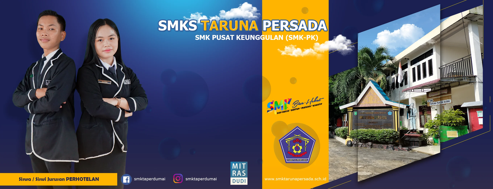

|  | ||||
|

SMK Taruna Persada Dumai adalah salah satu sekolah swasta di kota Dumai yang berdiri sejak tahun 1997, yang awalnya bertempat di depan SMKN2 Dumai di kawasan Bukit Datuk Dumai, selanjutnya pindah di Bukit Timah Dumai pada tahun 1998. SMK Taruna Persada Dumai dibawah naungan Yayasan pendidikan Taruna Persadayang sudah terdaftar pada Kemenkum dan Ham tahun 1997 yang di ketuai oleh Bapak H.Rusdi Fariyadi
Sejak berdiri sampai dengan saat ini SMK Taruna Persada Dumai Dipimpin oleh Dr. SUGIARTO, MM Selaku Kepala Sekolah. SMK Taruna Persada Mendapat berbagai predikat dan program pengembangan diantaranya, RSBI pada tahun 1997 sampai dengan berakhirnya program tersebut, SMK Rujukan mulai tahun 2016.